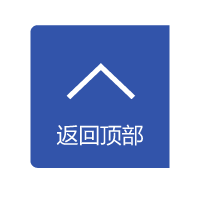

政策申报
Policy to declare
服务支持
SERVICE SUPPORT
勇于做小 微利是图
做别人不能做的事情，要把每一件小事情做好、做精、做深；查堵每个环节的漏洞，不简单追求利润的较大化，而要追求客户价值的较大化。公司有较强竞争力的、专业化运营团队。
勇于做小 微利是图
做别人不能做的事情，要把每一件小事情做好、做精、做深；查堵每个环节的漏洞，不简单追求利润的较大化，而要追求客户价值的较大化。公司有较强竞争力的、专业化运营团队。
勇于做小 微利是图
做别人不能做的事情，要把每一件小事情做好、做精、做深；查堵每个环节的漏洞，不简单追求利润的较大化，而要追求客户价值的较大化。公司有较强竞争力的、专业化运营团队。
